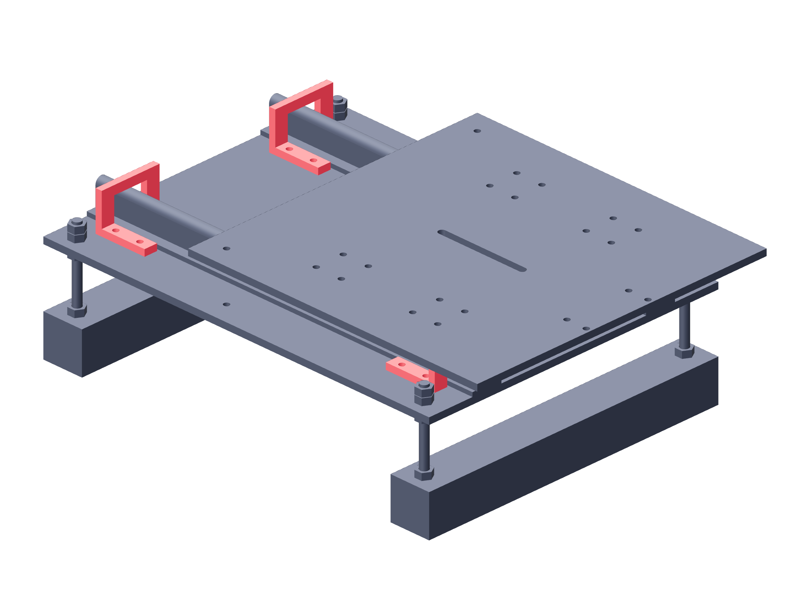

Observation / two stages146 / 179
Install four metal camera stops
Preformed metal angles stop the blocks before they leave the rail. Their fork clears the rail support while the 38 mm upright stays below the carriage.
AddPer stage: 4 camera-rail-stop · 16 M5 × 25 / 32 washers / 16 locking nuts
Tools / setup3D STEP / fabrication note · 4 mm hex · hand slide

- Place each completed forked stop over its rail at the two end stations.
- Align its four foot holes with the fixed plate; keep the 38 mm upright square to the rail.
- Fit both end stops to each rail and start all four foot bolts per stop.
- Slide the carriage to both ends by hand; confirm blocks contact metal before reaching rail ends.
Ready when
Both rails have metal stops at both ends; the carriage clears every 38 mm stop and no block can leave the rail. A stop striking the plate or missing the block fails retention. Correct the 3D angle geometry and bolt location before mounting the camera.